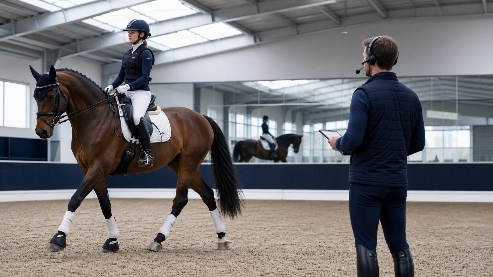

SOAI Training System
你踩上马镫
的那一刻
SOAI 已经开始记录

↓
向下探索
AI 正在扫描你的姿态
● 背部角度 ── 12.4°
● 髋部稳定 ── 87%
● 重心偏移 ── −2.8cm
● 踩镫压力 ── 均匀
×
三周后的你
数据不会说谎
使用前
使用 SOAI 后
0%
姿态稳定性提升
0周
平均见效周期
0°
背部角度优化
开始你的训练
成为更好的骑手
预约演示，亲身体验 AI 姿态分析
预约演示 →
了解更多